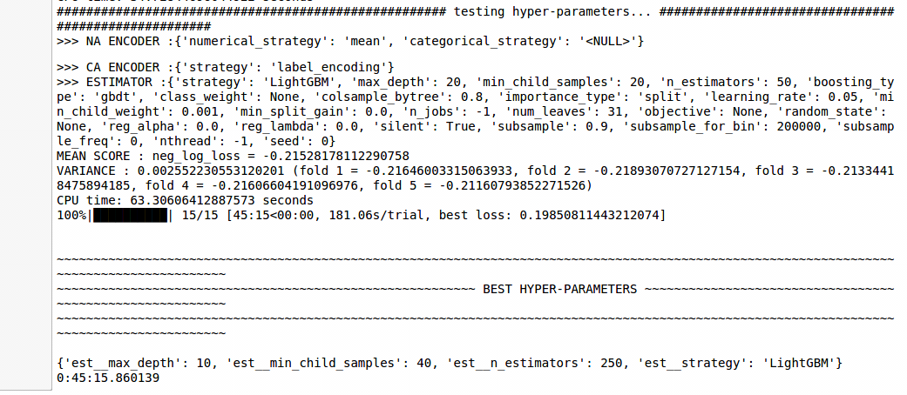

MLBox¶
In a business context we aim to produce quality models in a limited time period. Even though most of the time spent on a given model actual involves sourcing data and preparing the data we can speed up the modelling itself by employing autoML tools. A quick internet search reveals plenty of options whether they be open source Python packages such as TPOT or MLBox or paid for solutions such as DataRobot. H2o is an interesting solution as it has an open source platform as well as an enterprise solution as well as the package sparkling water for use with Spark.
The platforms aim to streamline the modelling process from preprocessing right through to making predictions. Some seem to be easier to install and use than others, for example I’ve had issues trying to install autoKeras and autosklearn. Some let you load and hit start while others require parameter specifications. Here, I’m using MLBox which I found easy to install - note it’s Linux only - and use. However, it does have some shortcomings such as the fact that it no longer supports XGBoost. In that respect, MLBox seems to suffer from not having a community behind it to for maintenance and improvement.
MLBox the user needs to specify the search grid - personally I like this as I like to be close to the action but it does take more time and effort. Another advantage of MLBox is that it is easy to access the code and therefore customise it.
I have tested MLBox againt my tuning algortihm for XGBoost. So I’ve used the same dataset with the same test and train split. Since XGBoost is not implemented, I’ve used LightGBM. It is actually possible to include more than one algorithm and in this case it will ignore parameters that don’t apply to a given algorithm.
The dataset comes from a 2014 university paper predicting the success of telemarketing campaigns for a Portuguese bank. The reduced dataset which I used comes from The UCI Machine Learning Repository. I used the “bank-full” dataset. For the coding, I’ve used Python 3 in a Jupyter notebook.
There are about 45K rows of data and 16 variables. As well as having information on the clients such age, job, education and marital status there is also information on telephone marketing campaigns carried out and if they have a personal loan. There aren’t any null values in the data, but some variables include the modality “unknown”.
Although my dataset doesn’t have any missing values, MLBox can handle them with its NA_encoder() function. With various strategies available with the default being the mean for numerical variables and ‘NA’ for categorical.
For the modelling, as usual we start by importing the relevant packages.
#Import packages and define a metrics function
import pandas as pd
from mlbox.preprocessing import *
from mlbox.optimisation import *
from mlbox.prediction import *
from sklearn import metrics
The first step is to import the data then MLBox carries out preprocessing activities such as droping duplicates and constant variables. It also identifies whether it is a regression or classification problem and gives some summary statistics. Rather than importing the data into the session ourselves, we just point MLBox in the right direction.
#Import the data and apply some preprocessing
paths = ["../raw data/train.csv", "../raw data/test.csv"]
target_name = "y"
rd = Reader(sep = ",")
df=rd.train_test_split(paths, target_name)
{kind=link}
The next step is to identify and potentially remove variables suffering from drift. Drift refers to covariate shift which is when there is a change in the distribution of input variables.
dft = Drift_thresholder()
df= dft.fit_transform(df)
{kind=link}
We then define the optimisation strategy and search grid. The function Opitmiser() has a default scoring metric is negative log loss for a classifiation problem. We can also define a scorer ourselves with make_scorer(). This function also allows us to define the number of cross-validation folds.
opt = Optimiser()
space = {
'est__strategy':{"search":"choice",
"space":["LightGBM"]},
'est__min_child_samples':{"search":"choice",
"space":[10, 20, 40, 100]},
'est__max_depth':{"search":"choice",
"space":[5, 10, 20, 30]},
'est__n_estimators':{"search":"choice",
"space":[50, 100, 250, 500]}
}
Next the tuning is carried out to identify the best parameters. This took about 45 minutes for my problem. For each iteration, the NA encoder for imputing missing values is run along with the CA encoder for encoding categorical values. The CA encoder is interesting in that it calculates entity embeddings rather than using a label encoder for example. So categories are represented by vectors in a euclidian space using a neural network to learn the representation.
params = opt.optimise(space, df)
This resulted in the below parameters:
{kind=link}
We can then predict the outcomes and save them in a csv file using the below.
%matplotlib inline #so plots are displayed in the notebook not as pop-ups
prd = Predictor(to_path="save")
prd.fit_predict(params, df)
{kind=link}
Finally printing the results I got a ROC AUC score of 0.7331 which is somewhere between the first run from my XGBoost tuning algorithm which returned a result of 0.7270 and the second which returned 0.7615. In reality the confusion matrix and associated metrics need to be studied in order to make an informed choice.